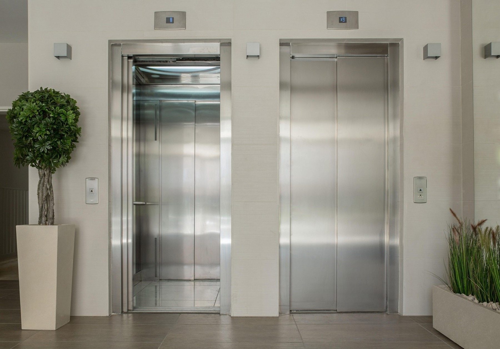
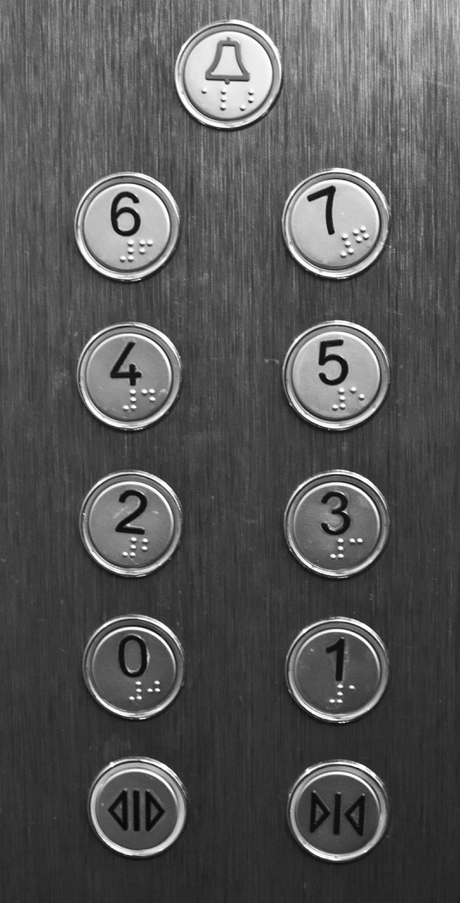
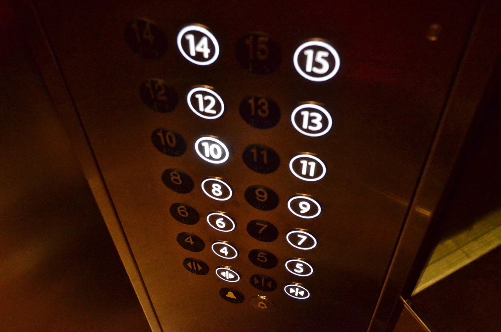

A few days ago I was riding an elevator in a Shenzhen office building pushing thirty years old. Doors dented to hell, handrails worn to a shine — and one thing in that car spotless, not a single fingerprint: the mirror on the back wall. And the very "Xiaohongshu" thought that popped into my head was this: if even the handrails look this wrecked, who's been polishing this mirror every single day — and why?
I used to answer this one smooth. My old draft had it down to four reasons, lined up like soldiers: makes the wait less annoying, makes the car feel bigger, prevents crime, helps wheelchair users. Four clean answers, each written like it was copied straight out of some regulation. Then I actually went and dug up the sources. By the end of it my face was a little hot — those four answers sound like they're in the same league, but their evidence is on completely different planets. One has a citation you can look up. One is a visual trick I oversold. One can't survive two follow-up questions. And one — the only one written in black and white into an actual standard — I'd buried at the bottom of the list.
So this time I'm not bluffing. I'm dragging each answer out and putting it under the lamp. Verdict first, evidence after: only one of these four is hard proof bolted into a code. The other three get downgraded.
Sure, the same mirror can end up helping several things at once. But "it might come in handy" and "the standard requires it" are not the same thing — and they're nowhere near the same weight of evidence.
"It makes the wait less annoying" has a real source — but the story got lost on the way
"The elevator was too slow, so management put in a mirror, and the complaints magically vanished." You can dig up eight hundred versions of this online: a New York office tower, some grand hotel, a young psychologist, half of them swearing the complaints never came back. I turned over every corner I could find. Not one yielded a time, a place, or a name I could verify. So I'm not repeating any of the dramatic details — the more cinematic the telling, the less checkable it gets.
The hard thing I did find is David Maister's 1985 paper, "The Psychology of Waiting Lines." He cites a hotel case: guests complained the elevator took forever, the management installed a mirror in the waiting area, and the complaints dropped — even though the actual wait didn't shrink by a single second. Maister uses it to make a deeply counterintuitive point: the moment people have something to do, even just checking themselves in a mirror, the occupied time feels shorter than standing there empty.

"It makes the car feel spacious" is a visual trick — and I quietly deleted a fake-looking statistic
A mirror pulls your line of sight backward, so the back wall stops reading as a dead end. In a cramped car, it gives your eyes somewhere to drift instead of locking into an awkward face-off with a stranger. Stand in one and you feel it — that part isn't fake.
But no matter how spacious it feels, the mirror doesn't squeeze in one more person. And here's the embarrassing part — my old draft had this line in it: "Residential elevators are all 1.4 meters by 1.4 meters, and the mirror doubles the visual area." Reading it now, that's textbook fake precision — dragging "a common size" up to "a uniform standard," then quietly swapping "reflected visual depth" for "measurable area." Press me on where the number came from and I've got nothing. So this time I deleted it myself. The honest version: elevator dimensions vary by country, by standard, by building; what a mirror adds is a sense of visual continuity that, in some situations, makes the car feel less suffocating. That's it.
"It prevents crime" sounds the most thrilling — and dies the fastest under questioning
Standing at the mirror, you can catch the back-side corners in your peripheral vision; when the doors open, it's easier to notice who's standing in the far end of the car. That genuinely hands you a bit more control over your surroundings. But the moment you escalate that into "mirrors prevent crime," the evidence walks out.
Public safety rests on a whole stack of things: lighting, access control, emergency call points, surveillance, routine maintenance, someone actually in charge. A mirror might trim a blind spot here and there — and it might create new problems of its own: glare, misreads, the plain awkwardness of being watched in a closed box. It's an aid for your field of view. It is not a substitute for a camera, and the burden of safety should never get dumped on the passenger with a shrug and a "just watch yourself."


The one that can't be argued away — written into the standard for reversing a wheelchair
The three answers above are, respectively, unverifiable, an optical illusion, and unable to survive a follow-up. But this one — there's no escaping it. In some small cars, a wheelchair can't turn around inside. The user has no choice but to back out. That mirror on the rear wall lets them stay facing the control panel and still see the doorway and what's outside the car. This isn't some abstract "a little nicer for everyone" goodwill. It's a task as specific as it gets: without turning around, see the reversing path clearly.
And it's backed up. The European accessibility elevator standard EN 81-70 ties the rear-wall mirror — or reflective surface — explicitly to wheelchair reversing. KONE's write-up of the standard lays out car size, door width, handrails, controls, and contrast, item by item. The mirror is just one line in that whole stack of accessibility conditions.
This is the one that rewired how I look at "universal design." I used to love the pitch — "this design is better for everyone" — so correct, so elevated. But hear enough of it and you notice it washes out the original, concrete need until it's unrecognizable. The first person this mirror actually serves is the wheelchair user who can't turn around in a small car. The extra sense of room and the rear view that other passengers pick up — those are spillover benefits. Solving one specific person, one specific job, cleanly, beats hoisting a big flag of "inclusivity" every single time.
If I were specifying a mirror in a real project, I'd check these four in order
- Task
- What does the user actually need to see — the threshold, the corridor, someone behind them, or the feedback after pressing a button?
- Position
- Does the rear-wall mirror actually catch the reversing sightline? Does a handrail sit right across the critical reflection zone?
- Risk
- What if it shatters, will it glare, will it cause visual confusion, and who cleans it day to day?
- Combination
- Car size, door-open duration, button height, voice prompts — have they together cleared the local code's pass line?
One mirror carrying four jobs — the trick is they don't sabotage each other
Add it up and this mirror may be holding down four things at once: occupying the wait, extending visual depth, widening the rear view, and helping a wheelchair reverse. Four jobs, four different weights of evidence — and they all share the same pane of glass. This is where so-called efficiency in good design actually hides: you haven't necessarily packed in more functions. You've found one choice that holds up for several tasks without making any single group of users pay an obvious price for it.
Digital products work exactly the same way. A clear status indicator lets a newcomer understand what the system is doing, lets a veteran locate an anomaly at a glance, and lets the support team skip one round of guessing. An undo key protects the careful person and frees the fast one to operate boldly. So don't rush to brag "one design solved four problems." The honest work is crouching down and confirming, one by one: is each problem genuinely improved?
Then check the side effects. Could the mirror make someone sensitive to reflections dizzy? Could its height mean a seated user sees only the ceiling? If cleaning slips, does the trust it built collapse instead? Multifunctionality is never a free lunch. Every extra job it carries has to answer one question: did it weaken the thing that mattered more?
The evidence ladder for observing everyday design
- Write what you see first: the mirror's on the rear wall, the buttons are on the side, there's a threshold at the door.
- Then write the experience: I can see behind me, the space feels deeper. This is observation, not regulation.
- Propose a mechanism: why might this happen? Attention gets occupied, sightline gets extended.
- Find the authority: when dimensions, safety, or accessibility are involved, check the local standard.
- Keep the counterexample: a mirror can't replace capacity, surveillance, voice prompts, or a reasonable door-open time.
- David Maister, The Psychology of Waiting Lines — the waiting-experience case and the elevator-lobby mirror.
- KONE's write-up of DIN EN 81-70 — an overview of car size, door width, handrails, controls, and contrast requirements for accessible elevators.
- Standards differ across countries, regions, and building types; this piece does not replace project-level code verification.